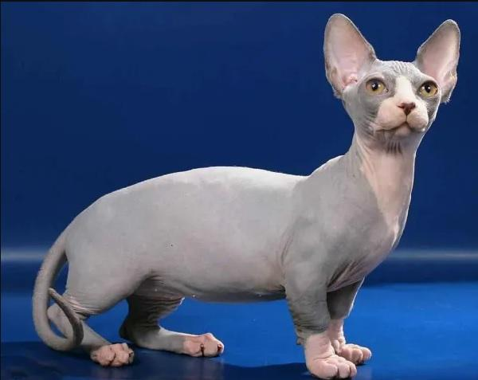

Se originó en Canadá, Estados Unidos, en el año 2005 cuando dos criadores, Stephanie y Pat Osborne, enamorados de los gatos pequeños, decidieron cruzar gatos de raza sphynx con gatos de raza munchkin, obteniendo un felino sin pelo como la primera raza y con las patas muy cortas como la segunda.
es de tamaño pequeño, con un peso de 2 a 4 kg y una altura de hasta 20 cm, pero con un aspecto muy fuerte y musculoso, pese a su cuerpo pequeño y sus patas diminutas.
La cabeza del gato bambino es más larga que ancha, con forma de cuña modificada, un hocico romo, unos pómulos evidentes y unos bigotes cortos. Las orejas destacan mucho por su gran tamaño, estando alertas y verticales. Los ojos son grandes, almendrados y muy espaciados entre sí.
Aunque lo anterior son rasgos muy característicos del gato bambino, lo que más destaca del cuerpo de esta raza es sus patas cortas, siendo algo más largas las posteriores que las anteriores, aunque en general tiene un aspecto muy robusto. El cuello es grueso, fuerte y musculoso y la cola es larga y delgada.
Como herencia del sphynx, los gatos bambinos no tienen pelo, lo que les hace ser muy suaves y agradables al tacto. Está permitido un poco de pelo en la punta de la cola y en el vientre.
Generalmente, estos gatos presentan unos colores claros, siendo normalmente blancos, y algunos ejemplares presentan manchas de color marrón o negro, aunque también hay ejemplares de color negro o crema.

es un felino muy sociable y activo, que se lleva muy bien con todo tipo de personas y animales. Se encuentran en continua búsqueda de acción y atención por parte de sus cuidadores, y es que adora ser el centro de atención y el “mimado” de casa. También es un gato muy inteligente, que incluso parece saber qué estás pensando y nota tus estados de ánimo y preocupaciones. Al ser un gato muy afectuoso, busca siempre estar cerca de sus cuidadores y no duda en demostrar su cariño acurrucándose o permaneciendo cerca de los mismos.
Siguiendo con el carácter y temperamento del gato bambino, podemos decir que es muy juguetón y nunca dice que no a una sesión de juegos, por lo que es el perfecto compañero de niños y otros animales igualmente activos.

es indispensable tener en cuenta la protección de su piel, ya que se encuentra totalmente expuesta al carecer de pelo. Esto equivale a un mayor riesgo de sufrir las consecuencias de las altas y bajas temperaturas, así como las quemaduras por el mismo motivo. Además, es más sensible a desarrollar problemas de piel y a sufrir heridas o rasguños. Para reducir este riesgo, el gato bambino debe mantenerse en un hogar con buena temperatura ambiental. En invierno será importante protegerlo con mantas y abrigos. Durante todo el año, debe estar protegido de los rayos UV del sol mediante el uso de cremas solares para gatos, pero en especial en los meses más calurosos del año, pues se puede quemar y aumentar el riesgo de desarrollo de algunos tumores cutáneos como el carcinoma de células escamosas.
Siguiendo con los cuidados del gato bambino, también es conveniente saber que tiene unas necesidades energéticas diarias superiores a otras razas, puesto que, al carecer de pelo, tiene una tasa metabólica más elevada. Así pues, necesita ser alimentado con un alimento para gatos completo, equilibrado y en mayor cantidad que otras razas pequeñas para el mantenimiento de su salud en condiciones óptimas.
Al no tener pelo, no necesita ser cepillado, pero sí puede ser buena idea bañarlo si lo tolera y no coge frío, o pasarle una toallita húmeda para gatos o un paño humedecido para eliminar la grasa que naturalmente segrega su piel. Es importante que sus grandes orejas sean higienizadas frecuentemente, así como sus ojos y sus dientes para prevenir inflamaciones e infecciones.

La esperanza de vida del gato bambino se sitúa entre los 12 y 15 años. En general, es un gato fuerte y sano, aunque sensible a los problemas de piel debido a la ausencia de pelo. Por esto es indispensable que su piel esté protegida todo el año y que reciban los cuidados higiénicos oportunos con frecuencia para evitar la proliferación de microorganismos patógenos en su piel. Debido a la herencia de patas cortas del munchkin, puede ser propenso al padecimiento de algunos problemas de columna, aunque no es frecuente.